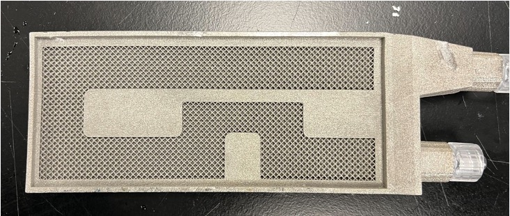

Additively Manufactured Coldplate
Background
The more powerful and advanced a radar system becomes, the more heat it generates. In this energy intensive environment, liquid cold plates are often placed alongside surfaces with high heat loads. These cold plates collect the heat from the heated surfaces via conduction and convect the heat off fins to a coolant fluid that is being pumped through the plate via a pressure head.
With the limitations to fin geometries produced from subtractive manufacturing, interest has been growing to use additive manufacturing to create heat sinks with novel fins designs that will increase heat transfer efficiency. In a project in affiliation with Northrop Grumman, who provided a base cold sink coupon design, and the Center for Advanced Life Cycle Engineering at the University of Maryland, who provided the materials and printers, our team was tasked to using Selective Laser Melting (SLM) to print a novel fin cold plate part of our design.
If you are not familiar with SLM, I provided a youtube video below for some background.
Design
Our goal was to create a design that maximize the heat transfer from the part while minimizing hydrodynamic resistance. The main challenge of such a design would be the antagonistic goals. That is because maximizing heat transfer through increasing fin surface area would also increase hydrodynamic resistance, resulting in a slowdown of the flow of coolant. We also wanted to create a design that would necessitate additive manufacturing as opposed to CNC manufacturing given the current expense of printing with SLM.
After completing a literature review, we decided upon increasing the surface area to volume ratio by using a porous structure. We took inspiration from nature and choose a body centered cubic lattice as it had both a large surface area and porosity. It also had a low coefficient of friction in comparison to other lattice structures. A BCC structure provides the benefits of not requiring any support material removal as well. In our design model we achieved a maximum porosity of 90.5%. In addition the lattice structure resulted in a surface area to volume ratio of 19:1. This combination suggested a efficient use of channel space prior to testing.

Lattice Structure in base cold plate token (left), BCC Lattice Structure (right)
Fabrication
The lattice structure and cold plate token was printed using SLM in Inconel with the 3D Systems Prox 200.
Printed part before processing
After printing, the token was water sealed with plastic using UV curable adhesive and nozzles were added.
Printed part after processing
Testing
For our experimental setup we used a pressure based flow controller to set a pressure and measure the flowrate that runs through the token. To measure the temperature difference, we set the token on top of a 90 °C hot plate and took temperature measurements over the period of 10 minutes by scanning the water that comes out of the outlet with a temperature gun
The following equations were used to collect the temperature increase and hydrodynamic resistance.
Results
Our experimental resistance was lower than the control. The control was the worst fluidic resistance measurement across 6 different experimental groups with different fin designs.
In comparison to our control, our token had a 4.9 °C greater temperature increase, suggesting improved thermal performance over our control.
Next Steps
While we were happy with our work, we wanted to explore field driven design approach in the future. We started this approach with some CFD simulations in ANSYS. We would use CFD results to create geometry that conforms to internal flow while maximizing surface area for maximum heat transfer. We could also eliminate spots with zero flow velocity with this approach.